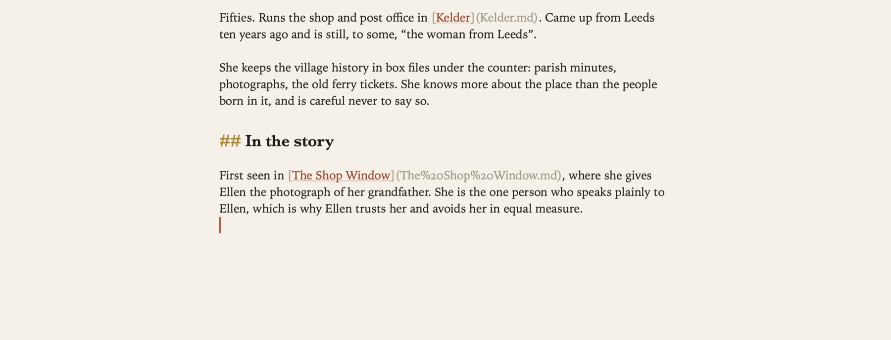
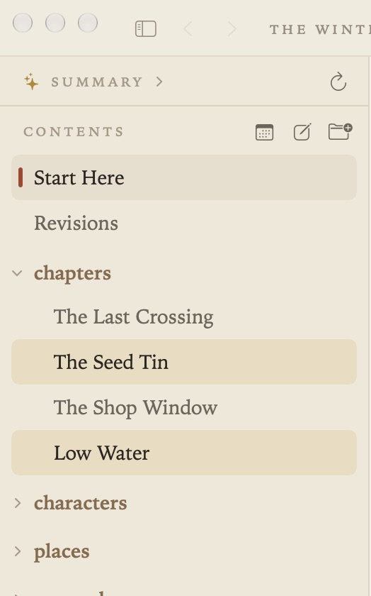
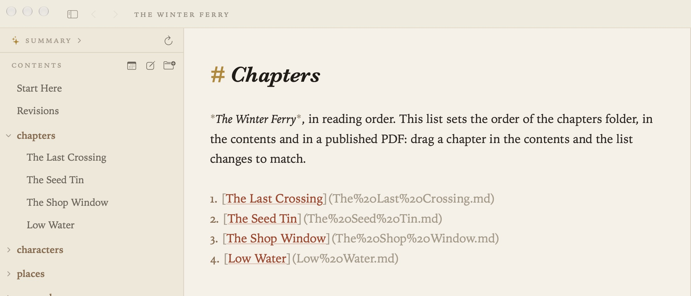
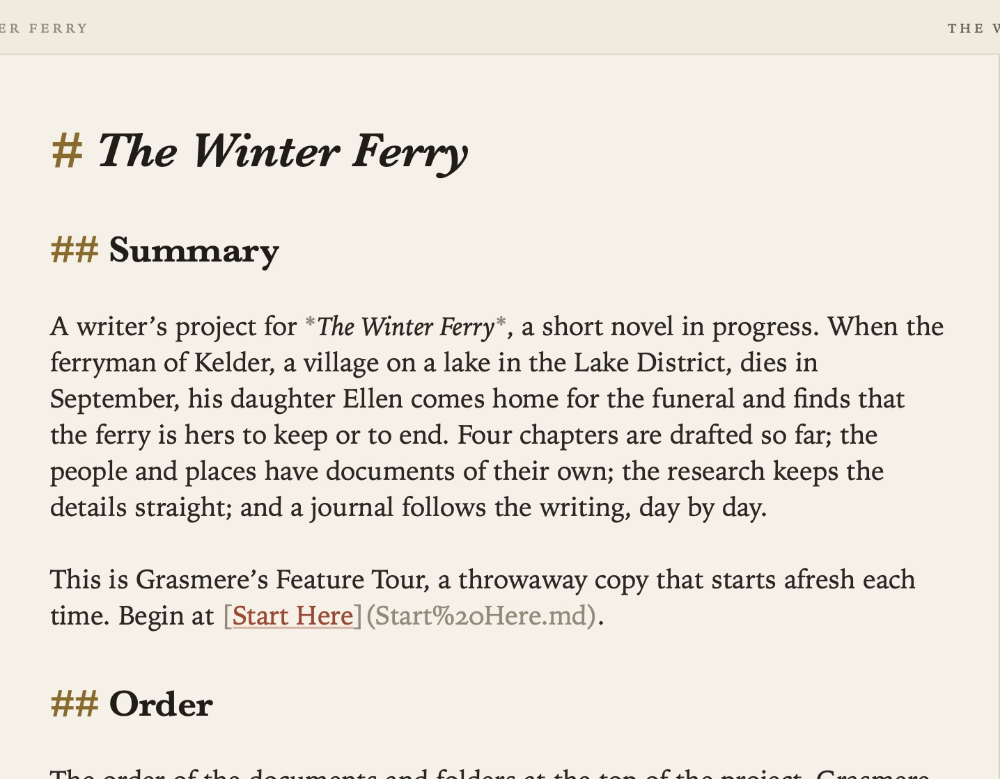

The Contents
The contents down the left side show everything in your project. Documents are listed by their titles, and folders appear as small headings. To hide the contents, or bring them back, choose View ▸ Hide Contents (⌃⌘S).

Projects
A project is a folder of Markdown files, nothing more.
- File ▸ Open Folder (⇧⌘O) opens a folder. You can also drop a folder on Grasmere’s icon in the Dock. An empty folder is a fine place to start.
- Double-click a Markdown file in Finder (new in 1.1) to open it in its project, if it’s in one you’ve opened before, or on its own if not. This works once Grasmere is the app that opens Markdown files, which you can set in Settings ▸ General ▸ Markdown files or in Finder’s Get Info ▸ Open with.
- Quick Look (new in 1.1). Press Space on a Markdown file in Finder to see it set as Grasmere sets it, light or dark to match your Mac.
- File ▸ Open Recent Project lists the folders you’ve used. Grasmere reopens your last project where you left it.
- File ▸ New Window (⇧⌘N) opens a second project alongside.
- Project ▸ Ignored Folders leaves out folders you don’t want in the contents, search or links, such as a folder of build output. You can also right-click a folder and choose Ignore This Folder.
A document opened on its own gets a window of its own. It’s just the page, with its folder named at the top and a button to open that folder as a project. Its links open the documents beside it, and Back and Forward work. So do Export ▸ PDF and Word Document, Copy as Context, Ask a Follow-up Question and Writing Replay. The things that need a project wait until you open one: the contents, backlinks, history, Tasks and Ask Your Documents.
The first time a document on its own links to other files, Grasmere asks once for permission to open the folder they’re in. That’s the document’s own folder, or one above it for links like ../people/Rosa.md. macOS only lets an app read the file you opened, not the files next to it. Once you’ve said yes, links that lead nowhere are underlined with dots, as in a project, and counted beneath the page (“3 links · 2 broken”).

Documents and folders
- File ▸ New Document (⌘N) and New Folder (⌥⌘N) make a new item with its name ready to type. Where it goes depends on what you last did in the contents. If you’ve just clicked a folder open, it goes inside. If you’ve just clicked a folder closed, it goes at the top level. Otherwise it goes beside the open document.
- Double-click a document to rename it. The file name changes and links to it are updated.
- Drag a document onto a folder to move it. Links follow. New in 1.4: dropped into the research folder, it's asked whether it's a source. See Research.
- ⌘1 (Go ▸ Select in Contents) moves the keyboard to the contents. The arrow keys move up and down, → and ← open and close folders, and Return opens a document. Type a few letters to jump to a name. Tab or esc takes you back to the document.
Right-click a document for Track (new in 1.4, see Review), Rename, Show in Finder, Copy Relative Path, Copy Absolute Path, Open in Split View and Move to Trash. Right-click a folder for Track Folder, Open as Manuscript, Publish to PDF, Set Word Target, Export Folder to Anki, its order, and Ignore This Folder. New in 1.4: Open as Manuscript and Publish to PDF both put the folder’s documents in hand and open the Publish stage, where you read them through and publish them; there’s no sheet. See The Manuscript View and Publishing.
New in 1.4. Some folders have a job: the research folder, the journal and the folder pictures are saved in. Rename or move one in the contents and it keeps its job. The foot of the window says so, “‘research’ is now ‘sources’, still your research folder”, with Undo, which puts the folder back with its links. The project remembers the name, so Save Web Page, Go ▸ Today and the rest carry on into the renamed folder, and Settings ▸ General shows it. Those settings work the other way too: the folder fields there are the project in front’s, and a new name typed into one renames the folder on disk, links following, with the same Undo. Rename the folder back to the setting’s name and the project forgets it ever changed. A research folder renamed outside Grasmere is still found by its research.md, if there’s only one. See Themes and Settings.
New in 1.3: sources in the research folder have an icon for what they are, such as a book, a globe for a web page or a page for an article. The research folder also has research.md, Grasmere’s table of your sources. See Citations.
Several documents at once
To work on several documents together, ⌘-click or ⇧-click to pick them, then right-click.

- Merge joins them into one document, with a section for each. Every link to the originals points at the right section, and the originals go to the Trash. Undo brings them back. It’s also in Project ▸ Merge Selected Documents.
- Export sends them to Anki. See Publishing.
- Move puts them in the Trash. ⌘⌫ does the same.
- Track (new in 1.4) puts them in hand for review and publishing, folders too: pick two folders and the item reads Track 2 Folders, a folder and a document together Track Selection; every document in them goes in hand in the contents' order. When all of them are in hand already the item untracks them. See Review.
Deleted documents go to the Mac’s Trash, so you can get them back from there. Grasmere asks first before trashing a folder or more than five items.
The order of a folder
Left alone, a folder lists its subfolders first and then its documents by name, the way the Finder does. You can give any folder an order of its own, either by hand or by a rule.

By hand. Drag a document onto the top or bottom half of another document’s row and it moves there. Grasmere keeps the order in the folder’s index.md. The folder is listed in the order that file’s links reach its documents, and anything not linked comes after. A folder without an index.md gets one the first time you drag something into a new place, listing its items as they were. To open it, right-click the folder and choose Edit Order of … (index.md). To make one straight away, choose Order … with index.md. When you move something into another folder, it comes out of the old folder’s order as well, and one Undo puts both orders back.
The index.md is an ordinary document, so you can write something about the folder in it too. This project’s Guides are kept in reading order this way.
By a rule. Right-click a folder and choose Sort Folder By ▸ Name, Date Created or Date Modified, each either way round. The rule goes into the folder’s index.md as an invisible comment, such as <!-- sort: modified, newest first -->, and the folder stays in that order as documents change. If you then drag an item, the rule becomes a list of links in the order shown, and the menu says Sort Folder By ▸ Custom (Drag to Reorder). If you didn’t mean it, there’s Undo in the bar.
The top level can have a rule too. Right-click the contents list itself, away from any row, and choose Sort Top Level By. That rule is kept in project.md’s Order section.
project.md
Every project has a project.md at its top, made the first time the project is opened. It’s an ordinary document, and Grasmere reads a few of its sections:

- Summary is a short overview of the project, shown at the top of the contents. Write it yourself, or let Project ▸ Generate Summary write it (see Ask Your Documents and AI). It’s also the home page when you build a website.
- Order links to the top-level documents and folders, in the order the contents list them. Dragging at the top level rewrites it.
- Writing holds word targets and the words written each day. See Writing Goals.
Anything else you write in project.md is left as it is.
Settings
In Settings ▸ Appearance:

- Name documents in the sidebar by Title (the first heading), File name, or File name with .md.
- Show images in the contents lists pictures alongside documents. Click one to look at it, double-click to rename it (links follow), or drag it into a document to link it.
- Show project.md in the contents and Show index.md in the contents list those files as documents. They’re hidden by default, and the order they set applies either way.
- Show research.md in the contents and Manuscripts (new in 1.3) lists the research folder’s table of sources. It’s on by default. Turn it off and the table is still kept up to date.
- Show highlights.md in the contents and Manuscripts (new in 1.4) lists the book of your highlights, kept in the research folder. It’s off by default, since the Research stage shows and opens the highlights book itself. Hidden, it isn’t read as a chapter of a manuscript and doesn’t count as linking to the sources it quotes. See Research.
The folders a project saves into, for pictures, the journal and research, are in Settings ▸ General, and belong to the project in front. See Themes and Settings.